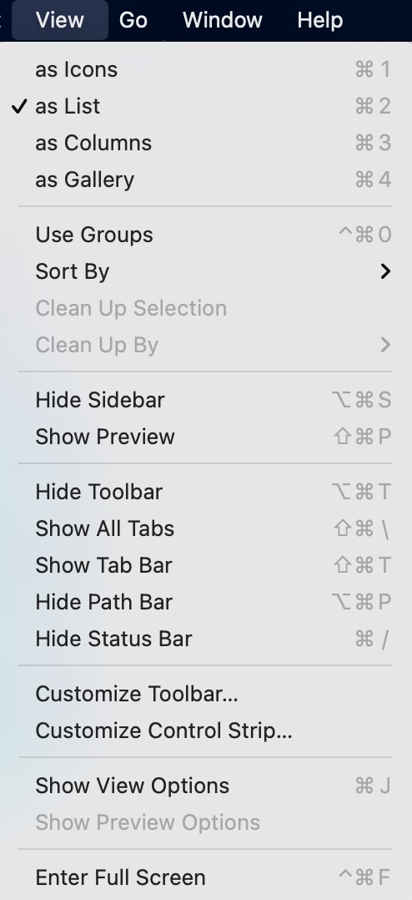

2 认识mac的文件系统
文件是什么呢？（展示下载文件夹中的图片，视频，txt，word等）
就是存储在硬盘里面的一些东西
如何更方便的看到这些文件从而对文件系统有一个更清晰的认识呢？
首先我们需要对mac的文件管理器——访达进行一些设置
对访达进行设置

打开Show all filename extensions

打开Hard disks从而看到挂载的磁盘（看一下）
打开你的家目录（一个房子的图标，我的是yangxijie）从而看到家目录
继续调整访达
⌘2：按照列表查看
⌥⌘S：打开边栏
⌥⌘T：打开工具栏
⌥⌘P：打开显示路径
⌘/：打开状态栏
观察根目录
什么是根目录？所有的文件和文件夹都存在根目录下。这里根目录就是你的内置硬盘
调整上面的显示项目

（分别解释每个文件夹的用处）
Applications：你安装的应用程序都在这个文件夹
Library：用来存应用程序的一些数据。比如微信的聊天记录就在这个里面哦
System：一些系统（macOS）的文件，没事儿别乱碰就好了
User：（打开系统偏好设置，查看用户）个人的文件就在这里
隐藏文件
⇧⌘. ：显示隐藏文件
)
点开头的文件夹和文件会被隐藏。这是因为有些文件可能比较繁琐或者对用户来说完全没有用处，或者可能对其进行操作比较危险，所以创建这个文件/文件夹的时候就带上了.将其隐藏不让用户看到。
但是也有一些不是点开头的文件或者文件夹被隐藏。那么为什么这些文件会被隐藏呢？因为系统不希望一般的使用者碰这些文件。因为可能你随手删掉一个系统就崩了。emmm，崩了就是说，电脑死机或者坏掉什么的。所以不要随便乱动。
不过我们待会儿要用，所以就简单看看吧。
主要是/bin目录。存放系统关键的二进制文件（什么是二进制文件我下节课会讲）（大家记住这里有个date就好了）
观察家目录

其实你的边栏（打开访达设置）显示的就是这里的文件夹（没什么神秘的，与别的文件夹没有任何区别）
路径
根目录/ == Macintosh HD
家目录~ == /Users/yangxijie（你的用户名）
树状分级
（试着写出路径）
文件名后缀的说明
文件名后缀是文件名的一部分
文件名后缀只是为了告诉系统该程序默认由哪个应用程序来打开（txt 文本编辑，jpg 预览，mp4 QuickTime Player）
你也可以不写后缀，但是这样系统就不知道要用哪些程序去打开/要如何打开。所以一定要写好后缀哦（但是后面会说到两种文件：二进制可执行文件和文本文件一般是不写后缀名的）